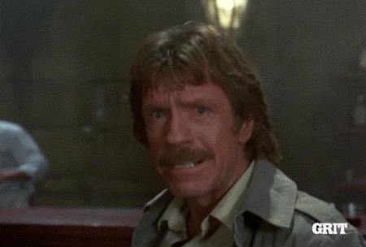

Un développeur trouve des solutions

Point de répit face au bug. Le développeur trouve des solutions.
Point de répit face au bug. Le développeur trouve des solutions.
Le développeur ne craint pas de faire le grand écart pour trouver les meilleures solutions.
Ca pique aux yeux parfois, ca peut faire mal, mais un développeur ne craint pas la douleur. Il est inébranlable face aux épreuves.